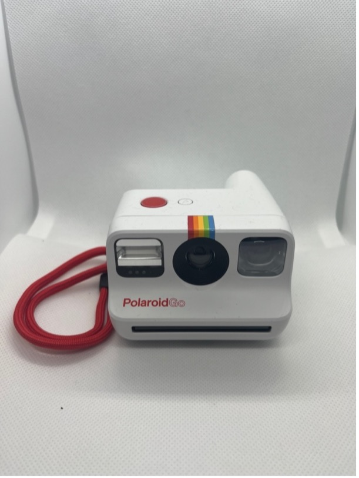

I-Type and Go
Polaroid OneStep2

Rok výroby: 2017
Rozsah zaostření: 0,6m – nekonečno
Objektiv: 106mm
Typ filmu: I-Type
Další funkce: blesk, korekce expozice, samospoušť
Stav: 10/10
Funkčnost: Ano
Kupní cena: 1200 kč
Poznámka:
Polaroid OneStep+

Rok výroby: 2018
Rozsah zaostření: 0,6m – nekonečno
Objektiv: 106mm
Typ filmu: I-Type
Další funkce: blesk, korekce expozice, standartní a portrétní objektiv, aplikace polaroid
Stav: 10/10
Funkčnost: Ano
Kupní cena: ? kč
Poznámka: Režimy v aplikaci: časovač, kresba světlem, plně manuální režim, dvojitá expozice, dálková spoušť, odpálení spouště zvukem, skener. Dáreček od Ollieho k Vánocům 2022
Polaroid Go

Rok výroby: 2021
Rozsah zaostření: 0,6m – nekonečno
Objektiv: 34mm
Typ filmu: Go
Další funkce: blesk
Stav: 10/10
Funkčnost: Ano
Kupní cena: Dárek od Ollieho
Poznámka: